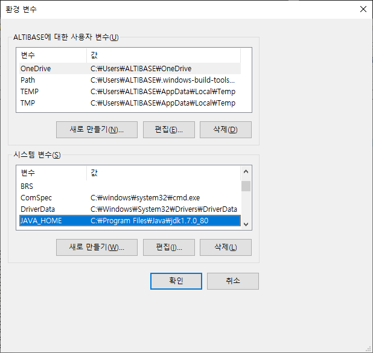
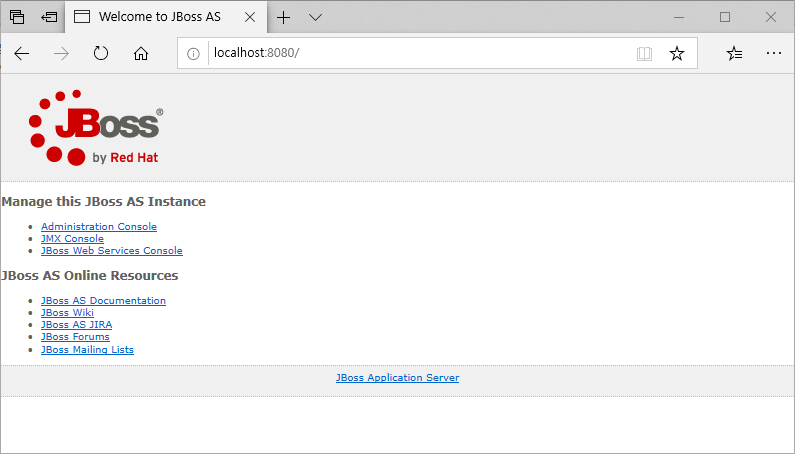
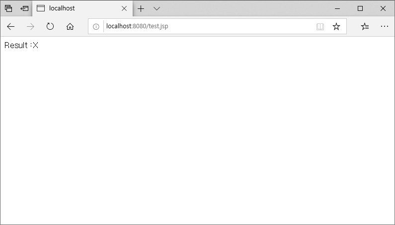
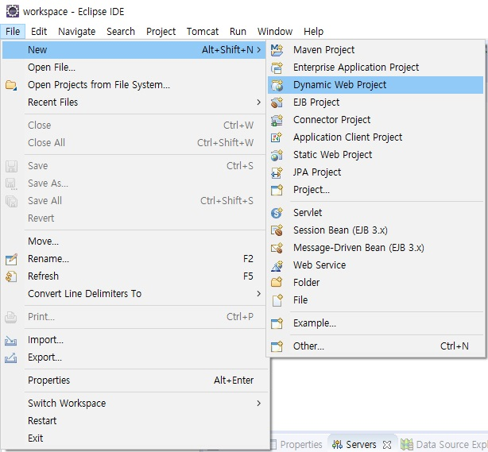
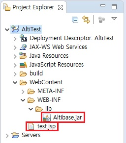
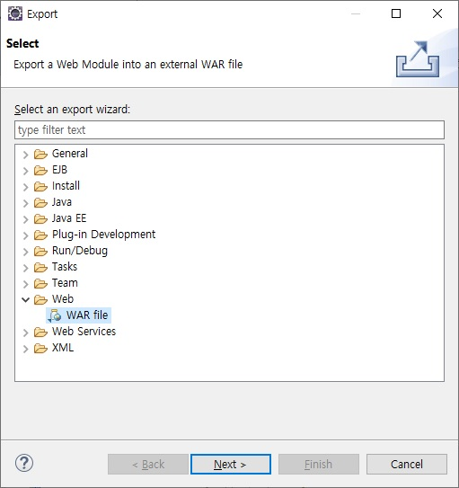
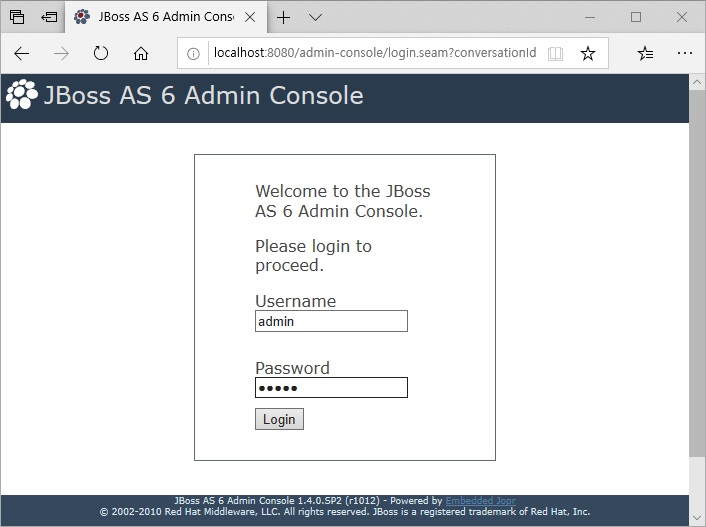
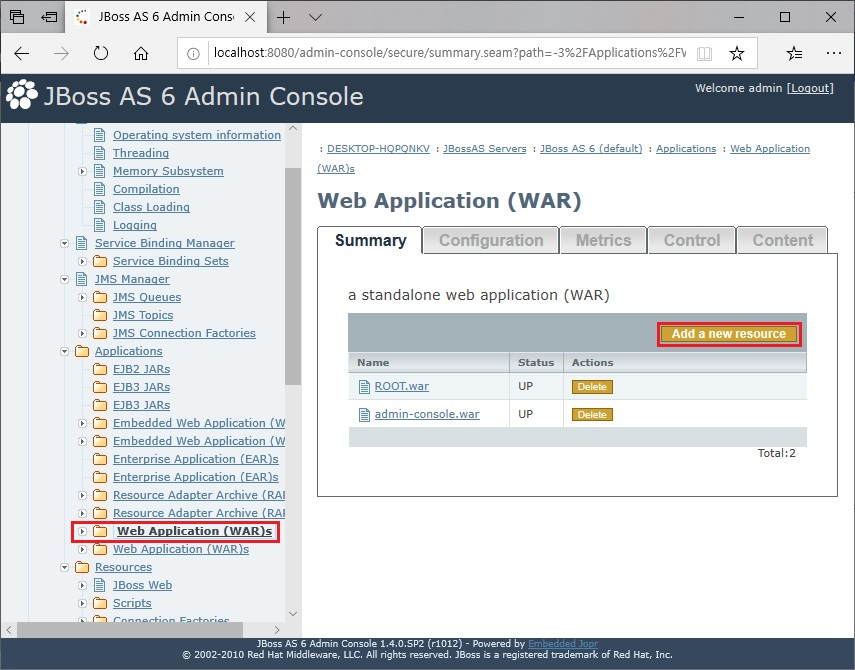
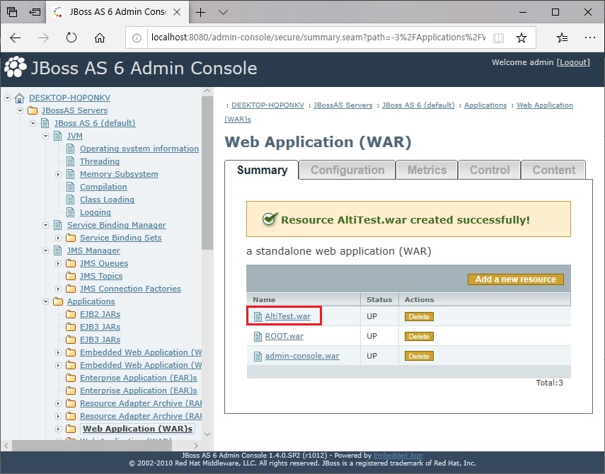

개요
본 문서는 Altibase와 JBoss를 연동하여 운영하기 위한 가이드 문서로써 JBoss를 설치하는 방법 및 환경변수 설정방법, Altibase와 JBoss를 연동하는 방법에 대해서 기술한다.
본 문서는 Altibase 6.5.1과 JBOSS 6.1.0.Final 버전에 대해 기술한 문서이다.
JBoss 설치
본 장에서는 JBoss를 설치하고 구동하는 방법, 환경 변수를 설정하는 방법, IP 주소 바인딩 하는 방법, 디렉토리 구조 등에 대해서 설명한다.
설치 전 준비사항
JBOSS는 Java EE 6 표준 인증을 받은 응용프로그램이기 때문에 JBoss를 사용하기 위해서는 JDK 1.6 이상을 설치해야 한다.
테스트 환경에서는 JDK 1.7을 사용했다.
기본 설치
JBoss를 설치하기 위해서 해당 버전의 패키지를 JBoss홈페이지에서 다운로드 받는다. (http://www.jboss.org/jbossas/downloads)
패키지를 다운로드 받은 후, 윈도우 환경에서는 압축 도구를 이용하여 압축을 풀고, 유닉스 환경에서는 unzip 명령어를 통하여 압축을 푼다.
unzip jboss-6.1.0.GA.zip … 생략 … inflating: jboss-6.1.0.GA/server/web/deployers/jboss-jca.deployer/jboss-jca-deployer.jar inflating: jboss-6.1.0.GA/server/web/deployers/jbossweb.deployer/web.xml inflating: jboss-6.1.0.GA/server/web/deployers/metadata-deployer-jboss-beans.xml inflating: jboss-6.1.0.GA/server/web/deployers/security-deployer-jboss-beans.xml #
본 문서에는 압축을 풀어서 생기는 jboss-6.1.0.Final 디렉토리를 JBOSS_HOME 으로 명칭한다.패키지 압축을 푸는 것으로 JBoss의 설치는 완료되며, JDK를 설정한 후에 구동시키면 된다.
패키지 압축을 풀면 해당 패키지와 동일한 이름의 디렉토리가 생기게 되며, 디렉토리 하위에는 JBoss구동 및 종료, 테스트에 대한 모든 파일과 디렉토리가 있다.
Windows 환경 JDK 설정
Windows 환경에서 JDK를 설정하는 방법은 다음과 같으며, 두 가지 방법 중 한가지를 선택하여 설정한다.
- 시스템 환경 변수에 JAVA_HOME 변수를 추가

Joss 구동 스크립트인 JOBSS_HOME/bin/run.bat 파일에 추가
run.bat@echo off rem ------------------------------------------------------------------------- rem JBoss Bootstrap Script for Windows rem ------------------------------------------------------------------------- rem $Id: run.bat 111395 2011-05-18 07:45:07Z beve $ set JAVA_HOME=C:\Program Files\java\jdk1.7.0 ← JDK 경로를 추가 @if not "%ECHO%" == "" echo %ECHO% @if "%OS%" == "Windows_NT" setlocal if "%OS%" == "Windows_NT" ( set "DIRNAME=%~dp0%" ) else ( set DIRNAME=.\ ) … 생략 …
Unix 환경 JDK 설정
Unix 환경에서 JDK를 설정하는 방법은 다음과 같으며, 네 가지 방법 중 한 가지를 선택하여 설정한다.
- 시스템 환경 변수에 JAVA_HOME 변수를 추가
JBoss 구동 스크립트인 JBOSS_HOME/bin/run.sh 파일에 추가
run.sh#!/bin/sh ### ====================================================================== ### ## ## ## JBoss Bootstrap Script ## ## ## ### ====================================================================== ### ### $Id: run.sh 111395 2011-05-18 07:45:07Z beve $ ### # Extract the directory and the program name JAVA_HOME=/usr/jdk/jdk1.7.0 ← JDK 경로를 추가* … 생략 … |
JBoss 디렉토리 구조
JBoss를 설치하면 다음과 같은 디렉토리들이 생성된다.
JBoss 구동
JBoss를 설치하고 JDK 설정을 하면 JBoss를 구동할 수 있다.
Unix 환경에서는 JBOSS_HOME/bin/run.sh 스크립트를 실행시켜서 구동할 수 있으며, Winodws 환경에서는 JBOSS_HOME/bin/run.bat 배치 파일을 실행시켜서 구동할 수 있다.
# sh run.sh … 생략 … 16:44:55,672 INFO [xnio] XNIO Version 2.1.0.CR2 16:44:55,678 INFO [nio] XNIO NIO Implementation Version 2.1.0.CR2 16:44:55,858 INFO [remoting] JBoss Remoting version 3.1.0.Beta2 16:44:55,907 INFO [TomcatDeployment] deploy, ctxPath=/ 16:44:55,960 정보 [HornetQServerImpl] trying to deploy queue jms.queue.ExpiryQueue 16:44:56,026 정보 [HornetQServerImpl] trying to deploy queue jms.queue.DLQ 16:44:56,039 정보 [service] Removing bootstrap log handlers 16:44:56,078 INFO [org.apache.coyote.http11.Http11Protocol] Starting Coyote HTTP/1.1 on http-127.0.0.1-8080 16:44:56,080 INFO [org.apache.coyote.ajp.AjpProtocol] Starting Coyote AJP/1.3 on ajp-127.0.0.1-8009 16:44:56,081 INFO [org.jboss.bootstrap.impl.base.server.AbstractServer] JBossAS [6.1.0.Final "Neo"] Started in 19s:637ms
JBoss가 정상적으로 구동이 되면 가장 마지막 로그 메시지에 "Started"라는 문구가 출력되며, 웹 콘솔로 접근하여 정상적으로 JBoss가 구동되었는지 확인할 수 있다.(http://server_ip:포트번호).
Administration Console에 admin 계정(패스워드: admin)으로 접속하여 현재 구동중인 JBoss에 대한 운영이 가능하다.

JBoss 종료
JBoss를 종료하기 위해서는 JBOSS_HOME/bin/shutdown.sh 또는 shutdown.bat 스크립트를 실행한다.
# sh shutdown.sh –S ← localhost로 구동한 경우 Shutdown message has been posted to the server. Server shutdown may take a while - check logfiles for completion #
JBoss 구동 및 종료 시 유의사항
JBoss를 구동하고 종료할 때 유의사항은 다음과 같다.
구동 시 포트 중복으로 인한 에러
JBoss는 기본으로 설정되어 있는 기본 Port는 "8080" 이다.
하지만 이 포트를 다른 프로그램에서 사용하고 있을 경우 JBoss구동 시에 다음과 같은 에러가 발생하기 때문에 Port 변경이 필요하다.
DEPLOYMENTS IN ERROR: Deployment "WebServer" is in error due to the following reason(s): LifecycleException: Protocol handler initialization failed: java.net.BindException: Address already in use /127.0.0.1:8080
JBoss의 기본 Port를 변경하기 위해서는 JBOSS_HOME/server/default/deploy/jbossweb.sar/server.xml 파일에서 Connector port를 수정한다.
<Connector protocol="HTTP/1.1" port="8088" address="${jboss.bind.address}" redirectPort="${jboss.web.https.port}" />
ALTIBASE와 JBOSS의 연동
본 장에서는 Altibase와 JBoss를 연동하여 사용하기 위한 설정 방법에 대해서 설명한다.
JDBC 드라이버
JDBC란 Java 응용프로그램에서 데이터베이스에 연결하여 여러 SQL을 실행할 수 있도록 제공하는 표준 인터페이스를 말한다.
이러한 JDBC 드라이버는 각 데이터베이스 벤더에서 제공하고 있으며, Altibase에서는 Altibase.jar 파일로 제공하고 있다.
이 JDBC 드라이버는 $ALTIBASE_HOME/lib 디렉토리 안에 존재한다.
JDBC 드라이버 설정
응용프로그램에서 직접 구현하여 커넥션 풀을 사용하는 경우에는 응용프로그램과 JDBC 드라이버를 같이 패키징하면 되지만 JBoss의 JNDI를 통해 데이터소스에 접근하고자 한다면
JDBC 드라이버를 모든 server configuration에서 접근이 가능한 곳에 위치시켜야 한다.
JBoss에서는 JBOSS_HOME/common/lib 디렉토리에 JDBC 드라이버(Altibase.jar) 를 위치시키면 모든 server configuration 에서 접근이 가능하다.
해당 디렉토리는 동적으로 반영되지 않기 때문에 JDBC 드라이버를 위치시킨 후, 반드시 JBoss를 재기동시켜야 한다.
데이터소스 파라미터
다음은 Altibase와 JBoss를 연동하여 사용하기 위한 데이터소스 설정 파라미터이며, 데이터소스 설정 시 사용할 수 있는 거의 모든 설정 정보를 포함하고 있다.
나열된 파라미터들의 정의를 확인한 후, 필요로 하는 파라미터들을 조합하여 데이터소스 파일에 설정한다.
문서 편집기를 이용하여 데이터소스 파일을 직접 생성할 수 있으며, xx-ds.xml의 형태로 JBOSS_HOME/server/default/deploy 디렉토리에 위치시킨다.
| 파라미터 | 설명 |
|---|---|
| <jndi-name> |
|
<connection-url> | 접속할 DBMS의 URL을 설정 |
<driver-class> | DBMS와 연동 시 사용할 JDBC 드라이버를 설정 |
<user-name> | 사용자 설정 |
<password> | 패스워드 설정 |
<new-connection-sql> | 커넥션 생성시 호출할 SQL 지정 |
<check-valid-connection-sql> | 커넥션 풀에서 커넥션을 얻었을 때 호출할 SQL 지정 |
<valid-connection-checker-class-name> | 커넥션 풀에서 커넥션을 호출하기 전에 유효한 커넥션인지 확인함 |
<exception-sorter-class-name> | 에러 발생 시 DBMS의 에러코드와 메시지를 확인 |
<track-statements> | Statement와 Resultset이 unclosed 되는 경우 추적하는 모니터링 옵션 |
<prepared-statement-cache-size> | 커넥션당 캐싱할 Preparestatement의 수로써 다음 호출 때 재사용함 |
<shared-prepared-statements> | Preparestatement 캐싱 여부를 지정하는 것으로 동일 트랜잭션에서 여러번 호출하는 경우 Statement를 반환함. 기본값은 false. |
<query-timeout> | SQL의 Timeout 값을 설정 |
<background-validation> | 커넥션이 유효한지 검사하는 과정의 오버헤드를 줄이기 위해서 사용하는 옵션. 기본값은 false. |
<idle-timeout-minutes> | 커넥션이 닫히기 전까지 idle 상태의 최대 시간. 기본값은 15분 |
<background-validation-minutes> | Connectionvalidator가 실행하는 주기. 기본값은 10분. |
<min-pool-size> | 커넥션 풀의 최소 개수 |
<max-pool-size> | 커넥션 풀의 최대 개수 |
<transaction-isolation> | Transaction Isolation Level을 지정하지 않으면 DBMS의 기본값을 사용함 |
<metadata> | Standardjbosscmp-jdbc.xml 파일에 정의되어 있는 type-mapping |
데이터소스 설정
Altibase와 JBoss를 연동하여 사용하기 위해 데이터소스를 설정하는 방법에 대하여 기술한다.
로컬 트랜잭션
Altibase와 JBoss를 연동하기 위한 최소한의 데이터소스 설정이므로 추가적인 항목이 필요한 경우 위에서 언급한 항목을 적절하게 사용하도록 한다.
파일명은 "xx-ds.xml" 의 형태로 저장하며, JBoss를 재구동하지 않아도 자동으로 데이터소스 파일을 감지하여 바인딩한다.
<datasources> <local-tx-datasource> <jndi-name>AltiTest</jndi-name> <connection-url>jdbc:Altibase://127.0.0.1:20300/mydb</connection-url> <driver-class>Altibase.jdbc.driver.AltibaseDriver</driver-class> <user-name>sys</user-name> <password>manager</password> <min-pool-size>10</min-pool-size> <max-pool-size>100</max-pool-size> <blocking-timeout-millis>5000</blocking-timeout-millis> <idle-timeout-minutes>15</idle-timeout-minutes> <metadata> <type-mapping>Altibase</type-mapping> </metadata> </local-tx-datasource> </datasources>
분산 트랜잭션
다음은 분산 트랜잭션을 사용하는 경우의 데이터소스 파일의 설정 예이다.
JBOSS_HOME/docs/jca 디렉토리에는 DBMS 별로 로컬/분산 트랜잭션에 대한 데이터소스 설정 예제파일이 있으므로 참고하여 설정하도록 한다.
파일은 “xx-xa-ds.xml” 의 형태로 저장한다.
<datasource>
<xa-datasource>
<jndi-name>AltibaseDS</jndi-name>
<track-connection-by-tx />
<isSameRM-override-value>false</isSameRM-override-value>
<xa-datasource-class>Altibase.jdbc.driver.ABXADataSource</xa-datasource-class>
<xa-datasource-property name="ServerName">127.0.0.1</xa-datasource-property>
<xa-datasource-property name="PortNumber">20300</xa-datasource-property>
<xa-datasource-property name="User">sys</xa-datasource-property>
<xa-datasource-property name="Password">manager</xa-datasource-property>
<metadata>
<type-mapping>Altibase</type-mapping>
</metadata>
<!--pooling parameters-->
<min-pool-size>5</min-pool-size>
<max-pool-size>250</max-pool-size>
<blocking-timeout-millis>5000</blocking-timeout-millis>
<idle-timeout-minutes>5</idle-timeout-minutes>
<check-valid-connection-sql>select * from system_.sys_database_</check-valid-connection-sql>
</xa-datasource>
</datasources>
Failover
Failover는 DBMS 의 장애로 인해 서비스가 중단되는 것을 방지하기 위해 사용중인 DBMS의 장애 시에 이를 감지하고 다른 DBMS로 절체하여 계속적인 서비스를 제공하기 위한 기능이다.
Failover 기능은 JBOSS 에서 제공하는 구문을 이용하는 방법과 ALTIBASE 에서 제공하는 구문을 이용하는 방법이 있다.
ALTIBASE 에서는 5.3.3 이상 버전에서만 Failover 기능을 제공하기 때문에 하위 버전을 사용 시 JBOSS의 구문을 이용해야 한다.
다음은 ALTIBASE에서 제공하는 구문을 통한 Failover 이다. 데이터소스 파일을 수정한 다음 첫번째 url의 DBMS를 종료시키고 테스트해보면 두번째 url의 DBMS로 Failover 가 되는 것을 확인할 수 있다.
ALTIBASE에서 제공하는 구문을 사용하면 CTF(Connection Time Failover)와 STF(Session Time Failover)가 가능하다.
<datasources> <local-tx-datasource> <jndi-name>AltiTest</jndi-name> <connection-url>jdbc:Altibase://127.0.0.1:20911/mydb? AlternateServers=(192.168.1.76:20911)& ConnectionRetryCount=3& ConnectionRetryDelay=3&LoadBalance=off& SessionFailOver=on </connection-url> <driver-class>Altibase.jdbc.driver.AltibaseDriver</driver-class> <user-name>sys</user-name> <password>manager</password> <min-pool-size>10</min-pool-size> <max-pool-size>100</max-pool-size> <blocking-timeout-millis>5000</blocking-timeout-millis> <idle-timeout-minutes>15</idle-timeout-minutes> <metadata> <type-mapping>Altibase</type-mapping> </metadata> </local-tx-datasource> </datasources>
다음은 JBOSS 에서 제공하는 Failover 구문이다.
Failover 할 DBMS 의 connection-url을 추가해주고, 두 url을 구분하는 구분자를 <url-delimiter>로 지정해준다.
JBOSS에서 제공하는 구문을 사용하면 CTF(Connection Time Failover)만 가능하다.
테스트 하는 방법은 위의 내용과 동일하다.
<datasources>
<local-tx-datasource>
<jndi-name>AltiTest</jndi-name>
<connection-url> jdbc:Altibase://127.0.0.1:20911/mydb,
jdbc:Altibase://192.168.1.76:20911/mydb</connection-url>
<url-delimiter>,</url-delimiter>
<driver-class>Altibase.jdbc.driver.AltibaseDriver</driver-class>
<user-name>sys</user-name>
<password>manager</password>
<min-pool-size>10</min-pool-size>
<max-pool-size>100</max-pool-size>
<blocking-timeout-millis>5000</blocking-timeout-millis>
<idle-timeout-minutes>15</idle-timeout-minutes>
<metadata>
<type-mapping>Altibase</type-mapping>
</metadata>
</local-tx-datasource>
</datasources>
샘플 예제
위에서 Altibase와 JBoss의 연동 방법에 대해서 알아봤다면, 본 장에서는 위의 설정을 이용하여 Altibase에 접속 및 쿼리를 수행함으로써 Altibase와 JBoss의 연동을 확인해본다.
JSP 샘플 예제
<%@ page import="javax.naming.*" %>
<%@ page import="java.sql.*" %>
<%@ page import="javax.sql.*" %>
<%
Connection con=null;
Statement st=null;
ResultSet rs=null;
try
{
InitialContext ctx = new InitialContext();
DataSource ds = (DataSource)ctx.lookup("java:/AltiTest");
con=ds.getConnection();
st=con.createStatement();
rs=st.executeQuery("select * from dual");
while(rs.next())
{
out.println("Result :" + rs.getString(1)+"<br>");
}
}
catch(Exception e)
{
out.println("Error:" + e.getMessage());
e.printStackTrace();
}
finally
{
if(rs!=null)rs.close();
if(st!=null)st.close();
if(con!=null)con.close();
}
%>
실행 방법
Altibase와 JBoss의 연동 테스트를 하기 위해 두 가지 방법을 사용할 수 있다.
기존에 배포되어 있는 WAR에 테스트 하고자 하는 JSP 파일을 생성하는 방법과 WAR 를 직접 생성하고 JBoss에 디플로이 한 후 테스트하는 방법이 있다.
기존 WAR 이용
JBOSS_HOME/server/default/deploy 디렉토리에는 JBoss에서 기본적으로 제공하는 WAR가 있다. 제공되는 WAR 에 JSP 예제 파일을 생성한 후, 테스트해본다.
본 문서에서 테스트할 때는 기본 위치인 ROOT.war 에 JSP 파일을 생성하여 사용했다. (JBOSS_HOME\server\default\deploy\ROOT.war)
JSP 파일을 생성한 후에는 주소창에 JBoss가 구동 중인 서버 IP와 포트번호, JSP 파일 이름을 차례대로 입력한다.
http://server_ip:포트번호/jsp 파일 이름 |

WAR 생성
JBoss 웹 콘솔을 사용하여 JSP 파일을 이용한 테스트하는 방법에 대해서 설명한다.
배포(deploy)는 어플리케이션의 서비스들을 시작하기 위해서 JBoss에 모듈 파일을 올리고 제어하는 모든 동작을 일컫는 작업을 의미한다.
샘플 테스트에서는 위에서 제공한 샘플 예제를 이용하여 WAR 파일을 작성하고, JBoss 서버에 배포하여 실행시키는 방법에 대하여 설명한다.
샘플 테스트에서 사용하는 WAR 파일은 이클립스를 사용하여 생성하였다.
- 이클립스를 실행시켜서 [File] → [New] → [Project] 를 선택한 후에 다음의 Wizard 에서 [Web] → "Dynamic Web Project" 를 선택하여 프로젝트 이름을 설정한다.
 - 다음과 같이 프로젝트가 생성이 되면, 위의 샘플 예제를 JSP 파일로 생성하여 "WebContent" 디렉토리 밑에 추가, Altibase.jar 는 "lib" 디렉토리 밑에 추가해준다.
 - JSP 파일과 Altibase.jar 파일을 추가했으면, [File] → [Export] 를 선택하고, [Web] → "War file" 를 선택하여 생성할 경로를 지정해주면 WAR 가 생성된다.
 - WAR 파일이 생성되면, JBoss 웹 콘솔에서 "Web Application" → "Add a new resource" 를 클릭하여 WAR 파일을 업로드 한다.

 - 생성한 WAR 파일을 업로드 하면 자동적으로 deploy가 되며, deploy가 성공했다는 메시지가 출력된다. deploy 된 WAR 파일도 리스트에서 확인할 수 있다.
 - deploy가 완료되면 인터넷 창을 실행해 다음과 같은 URL을 입력하여 실행시키면 된다.
http://server_ip:포트번호/WAR 이름/jsp 파일 이름 |

{kind=link}
{kind=link}
{kind=link}
{kind=link}
{kind=link}
{kind=link}
{kind=link}
{kind=link}
{kind=link}
{kind=link}
{kind=link}
{kind=link}
{kind=link}
{kind=link}
{kind=link}
{kind=link}
{kind=link}
{kind=link}
{kind=link}
{kind=link}
{kind=link}
{kind=link}
{kind=link}
{kind=link}
{kind=link}
{kind=link}